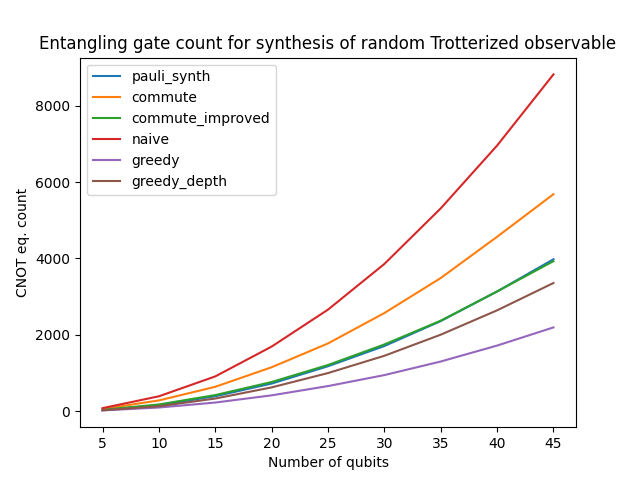
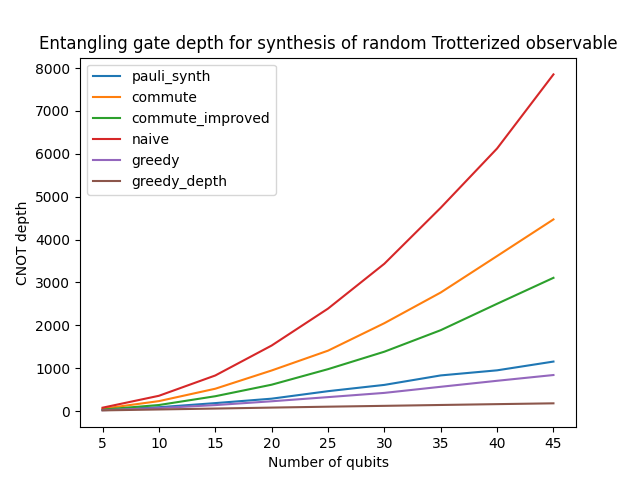

Variational Ansätze synthesis
Problem
In plenty of applications ranging from material science to quantum chemistry and linear system resolution, one needs to perform a task called Hamiltonian simulation.
In this setup, we are given some Hamiltonian \(H = \sum_i \alpha_i h_i\) and we want to build a circuit implementing \(e^{-i\gamma H}\). The standard approach is to perform a (first order) Trotter-Suzuki expansion. This expansion is based on the fact that the operator \(\left(\prod_i e^{-i\gamma \frac{\alpha_i}{n}h_i}\right)^n\) converges to our target unitary operator as \(n\) diverges.
Hence, we can simply take a large enough \(n\) and implement a circuit composed of \(n\) identical layers, each corresponding to a sequence of simpler unitary operators \(e^{-i\beta h_i}\). Under the assumption that each \(h_i\) is simple (e.g a Pauli operator), we can efficiently produce this circuit and thus approximate the propagator \(e^{-i\gamma H}\).
It is rather easy to formulate a simple circuit that implements each of the terms of a so called Trotter expansion (at least in the case where the \(h_i\) are Pauli operators, which fits most applications). However, it is far from optimal.
Synthesis
Synthopline comes with a collection of algorithms that, given a high level description of \(H\), can generate circuits implementing its Trotter expanded propagator.
The main function packing these algorithms is the qat.synthopline.generate_trotter_ansatz() method.
For instance, we can use this method to generate a QAOA like Ansatz:
from qat.synthopline.pauli_synth import generate_trotter_ansatz
from qat.core import Observable
import networkx as nx
# Generating a random graph
nbqbits = 3
graph = nx.generators.path_graph(nbqbits)
# Generating a target Hamiltonian
H1 = sum(Observable.sigma_z(a, nbqbits) * Observable.sigma_z(b, nbqbits) for a, b in graph.edges())
# Generating an initial Hamiltonian
H0 = sum(Observable.sigma_x(qb, nbqbits) for qb in range(nbqbits))
# Our initial state will be a uniform superposition |+>
init_state = "+" * nbqbits
# nsteps plays the role of the `depth` parameter
ansatz = generate_trotter_ansatz(H1, H0, nsteps=2, final_observable=H1, init_state=init_state)
for name, params, qbits in ansatz.circuit.iterate_simple():
print(name, params[0] if params else "", qbits)
H [0]
H [1]
H [2]
CNOT [1, 0]
PH t_{0} [0]
CNOT [1, 0]
CNOT [2, 1]
PH t_{0} [1]
CNOT [2, 1]
H [0]
PH t_{1} [0]
H [0]
H [1]
PH t_{1} [1]
H [1]
H [2]
PH t_{1} [2]
H [2]
CNOT [1, 0]
PH t_{3} [0]
CNOT [1, 0]
CNOT [2, 1]
PH t_{3} [1]
CNOT [2, 1]
H [0]
PH t_{4} [0]
H [0]
H [1]
PH t_{4} [1]
H [1]
H [2]
PH t_{4} [2]
H [2]
The resulting job is more or less equivalent to a job produced by the qaoa_job() method of the
CombinatorialProblem class.
As for linear operator and phase polynomial synthesis, we provide a helper function to generate random instances of Pauli products called qat.synthopline.pauli_synth.generate_random_observable().
Additionally, we also provide a utility function that extracts a sequence of Pauli rotation out of a quantum circuit called qat.synthopline.util.extract_pauli_rotations().
Benchmarks
We ran all the possible backend strategies of qat.synthopline.generate_trotter_ansatz() on random observablen measuring both
the CNOT count and the CNOT depth of the output circuit.
Results are reported in the two figures below.


- According to these benchmarks:
The choice of the greedy strategy seems the logical one to optimize CNOT count
The choice of the greedy_depth strategy seems the best choice to minimize CNOT depth